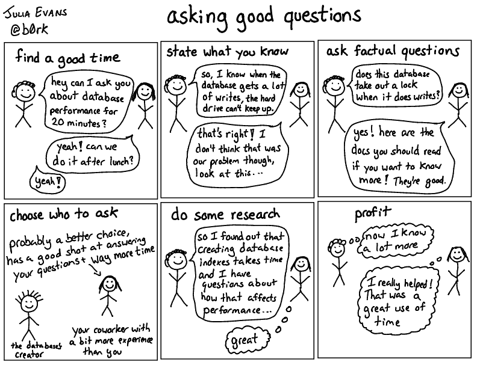

ask good questions¶
Source: How to ask good questions
Asking good questions is a super important skill when writing software. I’ve gotten way better at it over the years (to the extent that it’s something my coworkers comment on a lot). Here are a few guidelines that have worked well for me!

asking bad questions is ok¶
I’m actually kind of a big believer in asking dumb questions or questions that aren’t “good”. I ask people kind of dumb questions all the time, questions that I could have answered with Google or by searching our codebase. I mostly try not to, but sometimes I do it anyway and I don’t think it’s the end of the world.
So this list of strategies isn’t about “here are all the things you have to do before asking a question, otherwise you are a bad person and should feel bad, but rather “here are some things that have helped me ask better questions and get the answers I want!”.
If someone is refusing to answer your questions unless they’re “good”, I wrote a different blog post for them to read: How to answer questions in a helpful way
what’s a good question?¶
Our goal is going to be to ask questions about technical concepts that are easy to answer. I often have somebody with me who has a bunch of knowledge that I’d like to know too, but they don’t always know exactly how to explain it to me in the best way.
If I ask a good series of questions, then I can help the person explain what they know to me efficiently and guide them to telling me the stuff I’m interested in knowing. So let’s talk about how to do that!
State what you know¶
This is one of my favorite question-asking techniques! This kind of question basically takes the form
- State what you understand about the subject so far
- Ask “is that right?”
For example, I was talking to someone (a really excellent question asker) about networking recently! They stated “so, what I understand here is that there’s some chain of recursive dns servers…”. That was not correct! There is actually no chain of recursive DNS servers. (when you talk to a recursive DNS server there is only 1 recursive server involved) So them saying their understanding so far made it easy for us to clarify how it actually works.
I was interested in rkt a while back, and I didn’t understand why rkt took up so much more disk space than Docker when running containers.
“Why does rkt use more disk space than Docker” didn’t feel like the right question though – I understood more or less how the code worked, but I didn’t understand why they wrote the code that way. So I wrote this question to the rkt-dev mailing list: Why does rkt store container images differently from Docker?.
I
- wrote down my understanding of how both rkt and Docker store containers on disk
- came up with a few reasons I thought they might have designed it the way they did
- and just asked “is my understanding right?”
The answer I got was super super helpful, exactly what I was looking for. It took me quite a while to formulate the question in a way that I was happy with, and I’m happy I took the time because it made me understand what was happening a lot better.
Stating your understanding is not at all easy (it takes time to think about what you know and clarify your thoughts!!) but it works really well and it makes it a lot easier for the person you’re asking to help you.
Ask questions where the answer is a fact¶
A lot of the questions I have start out kind of vague, like “How do SQL joins work?”. That question isn’t awesome, because there are a lot of different parts of how joins work! How is the person even supposed to know what I’m interested in learning?
I like to ask questions where the answer is a straightforward fact. For example, in our SQL joins example, some questions with facts for answers might be:
- What’s the time complexity of joining two tables of size N and M? Is it O(NM)? O(NlogN) + O(MlogM)?
- Does MySQL always sort the join columns as a first step before doing the join?
- I know that Hadoop sometimes does a “hash join” – is that a joining strategy that other database engines use too?
- When I do a join between one indexed column and one unindexed column, do I need to sort the unindexed column?
When I ask super specific questions like this, the person I’m asking doesn’t always know the answer (which is fine!!) but at least they understand the kind of question I’m interested in – like, I’m obviously not interested in knowing how to use a join, I want to understand something about the implementation details and the algorithms.
Be willing to say what you don’t understand¶
Often when someone is explaining something to me, they’ll say something that I don’t understand. For example, someone might be explaining something about databases to me and say “well, we use optimistic locking with MySQL, and so…”. I have no idea what “optimistic locking” is. So that would be a good time to ask! :)
Being able to stop someone and say “hey, what does that mean?” is a super important skill. I think of it as being one of the properties of a confident engineer and an awesome thing to grow into. I see a lot of senior engineers who frequently ask for clarifications – I think when you’re more confident in your skills, this gets easier.
The more I do this, the more comfortable I feel asking someone to clarify. in fact, if someone doesn’t ask me for clarifications when I’m explaining something, I worry that they’re not really listening!
This also creates space for the question answerer to admit when they’ve reached the end of their knowledge! Very frequently when I’m asking someone questions, I’ll ask something that they don’t know. People I ask are usually really good at saying “nope, I don’t know that!”
Identify terms you don’t understand¶
When I started at my current job, I started on the data team. When I started looking at what my new job entailed, there were all these words! Hadoop, Scalding, Hive, Impala, HDFS, zoolander, and more. I had maybe heard of Hadoop before but I didn’t know what basically any of these words meant. Some of the words were internal projects, some of them were open source projects. So I started just by asking people to help me understand what each of the terms meant and the relationships between them. Some kinds of questions I might have asked:
- Is HDFS a database? (no, it’s a distributed file system)
- Does Scalding use Hadoop? (yes)
- Does Hive use Scalding? (no)
I actually wrote a ‘dictionary’ of all the terms because there were so many of them, and understanding what all the terms meant really helped me orient myself and ask better questions later on.
Do some research¶
When I was typing up those SQL questions above, I typed “how are sql joins implemented” into Google. I clicked some links, saw “oh, I see, sometimes there is sorting, sometimes there are hash joins, I’ve heard about those”, and then wrote down some more specific questions I had. Googling a little first helped me write slightly better questions!
That said, I think people sometimes harp too much on “never ask a question without Googling it first” – sometimes I’ll be at lunch with someone and I’ll be curious about their work, and I’ll ask them some kind of basic questions about it. This is totally fine!
But doing research is really useful, and it’s actually really fun to be able to do enough research to come up with a set of awesome questions.
Decide who to ask¶
I’m mostly talking here about asking your coworkers questions, since that’s where I spend most of my time.
Some calculations I try to make when asking my coworkers questions are:
- is this a good time for this person? (if they’re in the middle of a stressful thing, probably not)
- will asking them this question save me as much time as it takes them? (if I can ask a question that takes them 5 minutes to answer, and will save me 2 hours, that’s excellent :D)
- How much time will it take them to answer my questions? If I have half an hour of questions to ask, I might want to schedule a block of time with them later, if I just have one quick question I can probably just ask it right now.
- Is this person too senior for this question? I think it’s kind of easy to fall into the trap of asking the most experienced / knowledgeable person every question you have about a topic. But it’s often actually better to find someone who’s a little less knowledgeable – often they can actually answer most of your questions, it spreads the load around, and they get to showcase their knowledge (which is awesome).
I don’t always get this right, but it’s been helpful for me to think about these things.
Also, I usually spend more time asking people who I’m closer to questions – there are people who I talk to almost every day, and I can generally ask them questions easily because they have a lot of context about what I’m working on and can easily give me a helpful answer.
How to ask questions the smart way by ESR is a popular and pretty hostile document (it starts out poorly with statements like ‘We call people like this “losers”’, and doesn’t get much better). It’s also about asking questions to strangers on the internet. Asking strangers on the internet questions is a super useful skill and can get you really useful information, but it’s also the “hard mode” of asking questions. The person you’re talking to knows very little about your situation, so it helps to be proportionally more careful about stating what exactly you want to know. I think “How to ask questions the smart way” puts an extremely unreasonable burden on question-askers (it says that someone should exhaust every other possible option to get the information they want before asking a question otherwise they’re a “lazy sponge”), but the “How To Answer Questions in a Helpful Way” section is good.
Ask questions to show what’s not obvious¶
A more advanced form of question asking is asking questions to reveal hidden assumptions or knowledge. This kind of question actually has two purposes – first, to get the answers (there is probably information one person has that other people don’t!) but also to point out that there is some hidden information, and that sharing it is useful.
The “The Art of Asking Questions” section of the Etsy’s Debriefing Facilitation Guide is a really excellent introduction to this, in the context of discussing an incident that has happened. Here are a few of the questions from that guide:
“What things do you look for when you suspect this type of failure happened?”
“How did you judge that this situation was ‘normal?”
How did you know that the database was down?
How did you know that was the team you needed to page?
These kinds of questions (that seem pretty basic, but are not actually obvious) are especially powerful when someone who’s in a position of some authority asks them. I really like it when a manager / senior engineer asks a basic but important question like “how did you know the database was down?” because it creates space for less-senior people to ask the same kinds of questions later.
Answer questions.¶
One of my favorite parts of André Arko’s great How to Contribute to Open Source post is where he says
Now that you’ve read all the issues and pull requests, start to watch for questions that you can answer. It won’t take too long before you notice that someone is asking a question that’s been answered before, or that’s answered in the docs that you just read. Answer the questions you know how to answer.
If you’re ramping up on a new project, answering questions from people who are learning the stuff you just learned can be a really awesome way to solidify your knowledge. Whenever I answer a question about a new topic for the first time I always feel like “omg, what if I answer their question wrong, omg”. But usually I can answer their question correctly, and then I come away feeling awesome and like I understand the subject better!
Questions can be a huge contribution¶
Good questions can be a great contribution to a community! I asked a bunch of questions about CDNs a while back on twitter and wrote up the answers in CDNs aren’t just for caching. A lot of people told me they really liked that blog post, and I think that me asking those questions helped a lot of people, not just me.
A lot of people really like answering questions! I think it’s important to think of good questions as an awesome thing that you can do to add to the conversation, not just “ask good questions so that people are only a little annoyed instead of VERY annoyed”.
Thanks to Charity Majors for reminding me that I have something to say about asking questions, and to Jeff Fowler & Dan Puttick for talking about this with me!